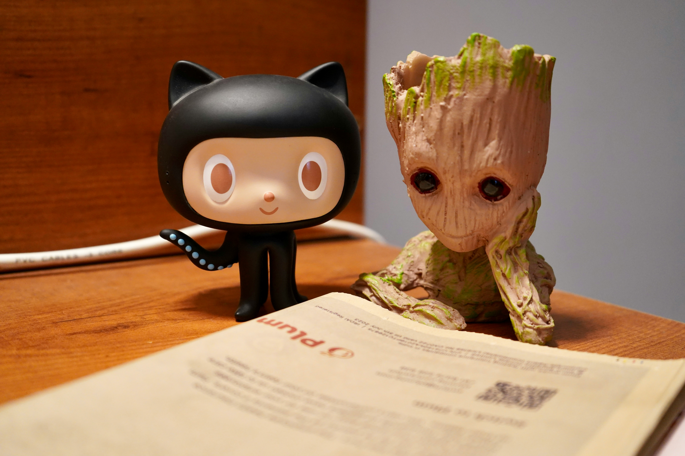

January 5, 2026
Learning Semantic HTML
I learned how to structure content properly using semantic tags like <header>, <main>, <section> and <footer>.

After several months of learning in the Frontend Developer path, I decided to document my learning journey and the projects I build while preparing for my first junior developer role.
I try to build small projects every day and improve existing ones. I practice writing clean HTML, responsive layouts and JavaScript by rebuilding real designs and adding features.
I started simple and gradually grew my learning journal. After each lesson, I write what I learned and what I struggled with. This helps me stay consistent and see my progress clearly.
I learned how to structure content properly using semantic tags like <header>, <main>, <section> and <footer>.

Learned how to initialize repositories, commit changes, and push projects online.
Learned how Flexbox helps align items, distribute space, and build responsive components easily.